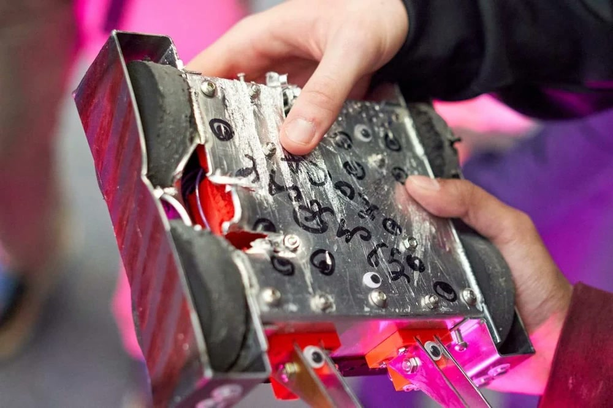

Gimbal Lock, a Beetleweight Competition Robot
February 2023

Overview
Gimbal Lock is a 1.5 kg robot built for a national university robot competition in 2023, where robots of the same weight class compete head to head in an arena. It was built by a team of three at Loughborough University and went from design to competition in about two weeks.
Design
The robot is a four-wheel-drive box with two pairs of forks low at the front and two pairs raised at the back. From the side this gives a parallelogram profile, so the robot can still push and lift opponents after it has been flipped over. The chassis was first made in mild steel and then changed to aluminium to stay under the 1.5 kg limit. The wheel guards are mild steel, and the lid, internal supports and mounts were designed in Fusion 360 and 3D printed.
Competition
Gimbal Lock won the inter-university competition. A battery cell failed before its first fight, and it came back through the redemption rounds by winning three fights in a row, which also took it into the main tournament against non-university teams, where it reached the quarter-finals.
| Event | Result |
|---|---|
| Inter-university competition | Winner |
| Main tournament | Quarter-finalist |
| Fights | 3 wins in a row after a battery failure in the first round |